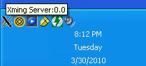
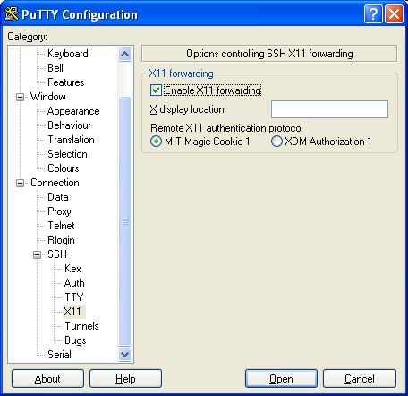
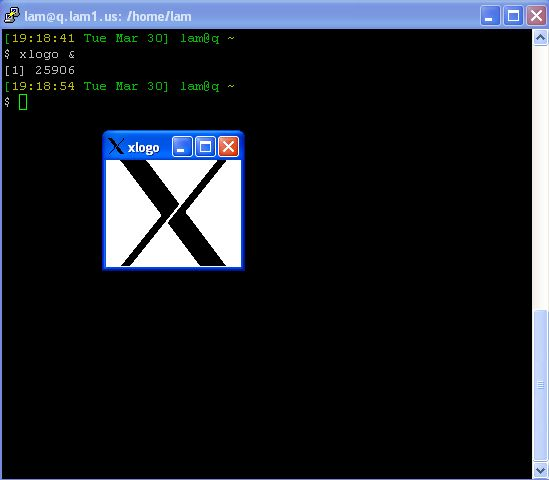
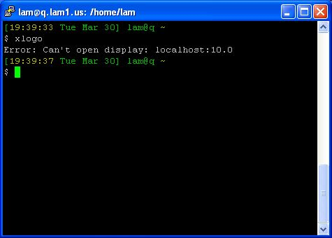

A tiny 2.2 MB installation file was downloaded from: http://sourceforge.net/projects/xming/. Xming is available under a number of licenses including the BSD License, GNU Library or Lesser General Public License (LGPL), MIT License, Public Domain, and the zlib/libpng License. Newer versions are available from http://www.straightrunning.com/XmingNotes/ for a limited time after making a donation. Wikipedia has an article on Xming.
Xming is reported to run on Windows 7, Windows Vista, Windows XP and Microsoft Windows Server 2003. This documentation was created by installing Xming on a Windows XP machine.
I found Xming incredibly easy to install on a Windows XP machine from an account with administrative rights. A set of screen images was created during the install but almost no options were changed from the defaults. The exceptions were to select that an SSH client not be installed along with Xming server and to have a desktop icon be created. No SSH client was installed because the latest version of PuTTY was already installed and Xming works with PuTTY. The entire installation including capturing the screen shots took only a few minutes.
|  | Starting the Xming server doesn't seem to do much but will leave a new icon in the taskbar. |
To enable X11 forwarding as the default in the PuTTY configuration for a saved session perform the following:
I found entering an X display location of PuTTY was not necessary for Xming. |  |
|  | TestingIt is always best to insure everything is working with xlogo or another lightweight X windows application before trying to configure and run a more complex X windows application. |
TroubleshootingThe Xming server doesn't need to be started before you open the PuTTY session. If you do get the "Can't open display" error and find that the Xming server is not running, start the server and try again. The "Can't open display" error without a display name may indicate that X11 forwarding is not enabled. |  |
This documentation page was created Tuesday, March 30, 2010
by Lawrence A. Murakami of Fairbanks, Alaska.
ARSC Personal WebPage Disclaimer.